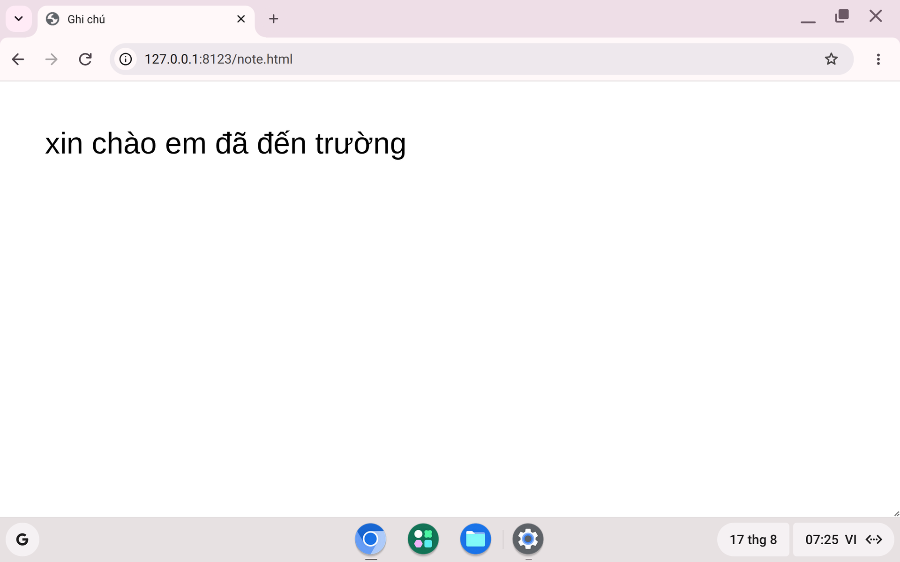
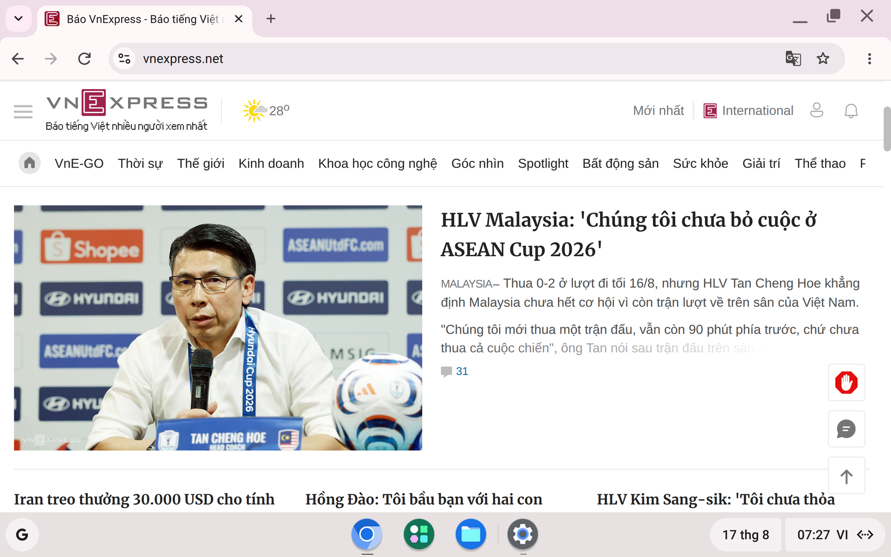
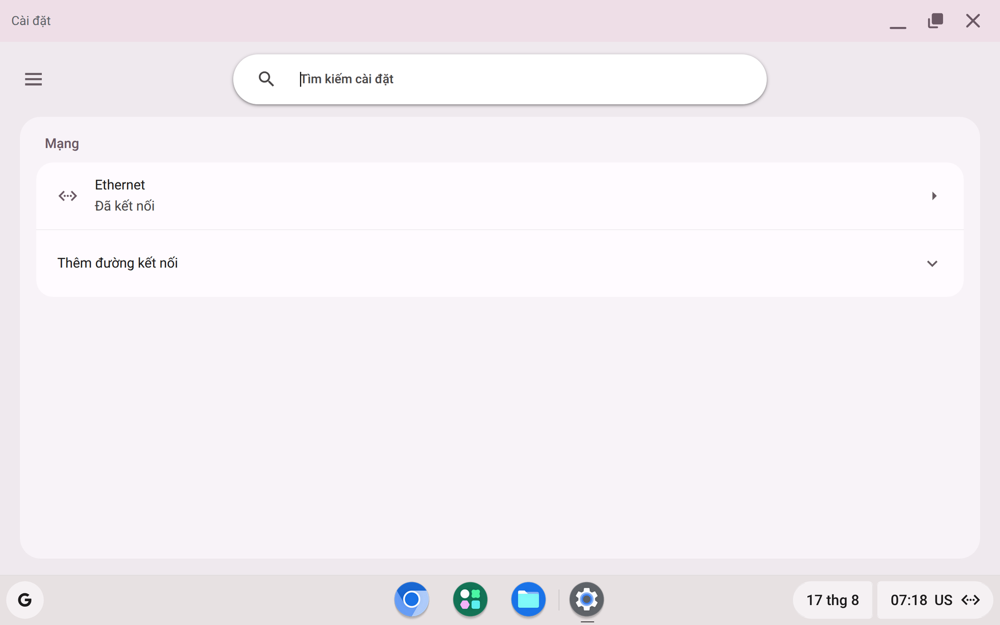

Ảnh chụp từ hệ thống đang chạy, không dàn dựng.
Đẹp đến đâu thì máy bạn cũng sẽ đúng đến đó.
Màn hình chính. Tiếng Việt là mặc định — bạn không phải
đi xin nó ở đâu cả.Lần đầu khởi động: tạo tài khoản ngay trên máy. Không ai
đứng giữa bạn và chiếc máy của bạn, kể cả khi mất mạng.

Gõ Telex, có sẵn từ giây đầu tiên. Bật bằng biểu tượng
VI ở góc phải hoặc Ctrl + Space; kiểu gõ chọn trong phần cài đặt
bàn phím.

Đọc báo trên VnExpress. Trang web nào chạy trên trình
duyệt thì chạy ở đây — quy luật chỉ có vậy.Facebook chạy trong trình duyệt, như trên mọi máy tính.
Chúng tôi cũng chẳng có cách nào làm nó khác đi.Nhắn tin Zalo qua bản web. Gõ Telex sẵn có, chốt đơn
với khách ngay tại đây.Quản lý gian hàng và đơn hàng trực tuyến. Nghề chốt đơn
cần chừng này, và chừng này chạy tốt.

Trang cài đặt. Ít thứ để chỉnh — vì ít thứ để hỏng.
Đó là chủ ý.